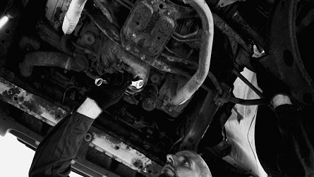
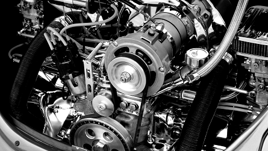

Bemutatkozás
Üdvözöljük oldalunkon és köszönjük az érdeklődését!



- Szeretném bemutatni Kisvárosi autószervizünket, amelyet Édesapánk hozott létre 1978-ban, Bánkon.
- Az autók iránti szenvedélyét én és testvérem is örököltük, így nem is volt kérdés, hogy tovább vigyük az örökséget. Mindketten autószereléssel kapcsolatos szakirányt választottunk. Testvérem karosszérialakatos és autófényezőként, én pedig autószerelő és autóelektronikai műszerészként végeztem.
- A képzés elvégzése után 1995-ben rögtön elhelyezkedtem édesapánk mellett. Bátyám pedig egy nagyobb karosszéria javító és fényező műhelyben dolgozott, Debrecenben.
- 2010-ben úgy döntöttünk - akkor még kis - műhelyünket kibővítjük, ezzel a szolgáltatásaink listáját is. A bővítés óta pedig családi vállalkozásként működünk. A helyi lakosok nagy örömmel fogadták, mert szinte teljeskörű szolgáltatást tudunk helyben nyújtani számukra.
- Az egész család szerencsésnek mondhatja magát, mert nekünk a hivatásunk a szenvedélyünk. Mindent megteszünk azért, hogy az általunk karbantartott autók tulajdonosai elégedettek legyenek és autóikat biztonságban tudják sokáig használni.
- Ha felkeltettük érdeklődését a Kapcsolat oldalunkon megtalálhatja elérhetőségeinket, ahol azonnali üzenet küldésre is van lehetősége.